Types and Specifications
When I use a word ... it means just what I choose it to mean—neither more nor less.
Lewis Carroll, Through the Looking-Glass
Our trip planner asks for two coordinates:
nearestStop(49.261, -123.249);The first number is a latitude and the second is a longitude. Reverse them and Java still sees two double arguments:
nearestStop(-123.249, 49.261);The compiler accepts the call even though a latitude cannot be −123 degrees. We represented two different concepts with the same machine type, so only argument position distinguishes them.
We will express that missing meaning with types and specifications. A type defines which values and operations belong to a concept. A specification defines what a program component requires and guarantees. Both make assumptions available for code, tools, and other programmers to inspect.
By the end of this chapter
- explain a type in terms of its values and permitted operations;
- distinguish compile-time checks from checks performed while a program runs;
- introduce application-specific types that prevent meaningless combinations;
- write a declarative method specification with preconditions, postconditions, mutation, null behaviour, and exceptions;
- compare deterministic and underdetermined specifications;
- compare specification strength by examining client and implementer freedom.
2.1Types Define Values and Operations
A type defines a set of values together with the operations available on those values. Java's int type contains the integers from −231 through 231−1 and supports operations such as addition and comparison. A Java reference type contains null and references to objects of compatible classes, and its declared methods determine which operations the compiler permits.
That definition is more useful than “a type tells Java how many bytes to use.” Storage is an implementation concern. Types help us reason about meaning.
Consider three integers in a transit system:
int stopId = 50201;
int routeId = 99;
int minutesUntilArrival = 4;Java allows stopId + routeId and routeId = minutesUntilArrival. Integer arithmetic defines both operations even though the transit application does not. Primitive types are useful, but they are often too permissive for the concepts we care about.
Static and dynamic checks
Java performs a static check using program text, before that program runs. This assignment fails to compile:
// Does not compile: a String value cannot be assigned to an int variable.
int minutes = "four";A dynamic check happens during execution and can use the actual input. Java cannot decide at compile time whether a coordinate read from a file is within range. Our code has to test that value when it arrives.
Static checking prevents an ill-typed program from starting. It can enforce only the rules represented in the type system. A variable called latitude still has type double; its name does not tell the compiler which values are valid latitudes.
2.2Define Types for Application Concepts
Java records provide a compact way to model plain data. The companion project defines GeoPoint as follows:
package ca.ubc.ece.cpen221.transit;
import java.util.Objects;
public record GeoPoint(double latitude, double longitude) {
public GeoPoint {
if (!Double.isFinite(latitude) || latitude < -90.0 || latitude > 90.0) {
throw new IllegalArgumentException("latitude must be in [-90, 90]");
}
if (!Double.isFinite(longitude) || longitude < -180.0 || longitude > 180.0) {
throw new IllegalArgumentException("longitude must be in [-180, 180]");
}
}
public double coordinateDistanceSquaredTo(GeoPoint other) {
Objects.requireNonNull(other, "other");
double latitudeDifference = latitude - other.latitude;
double longitudeDifference = longitude - other.longitude;
return latitudeDifference * latitudeDifference
+ longitudeDifference * longitudeDifference;
}
}The record header declares two components. Java supplies accessors named latitude() and longitude(), a canonical constructor, and value-based equals, hashCode, and toString implementations. The compact constructor adds our range checks before an instance can exist.
The constructor now rejects an invalid latitude as soon as it receives one:
new GeoPoint(-123.249, 49.261); // throws IllegalArgumentExceptionThe compiler still cannot detect the reversal because both components are double. The constructor catches it dynamically because this particular longitude lies outside the latitude range. If both numbers fit both ranges, then the check cannot detect the reversal. Separate Latitude and Longitude types could prevent that mistake at compile time. A type prevents only the errors that its design distinguishes.
We will also stop treating identifiers as interchangeable strings:
package ca.ubc.ece.cpen221.transit;
import java.util.Objects;
public record StopId(String value) {
public StopId {
Objects.requireNonNull(value, "value");
if (value.isBlank()) {
throw new IllegalArgumentException("stop id must not be blank");
}
}
}If we later introduce RouteId, then this call can fail at compile time:
// Does not compile if findStop expects StopId.
findStop(new RouteId("R4"));That is making an invalid state harder to express. Every application-specific type also adds a name and an abstraction for readers to learn. A private calculation may be clear with two double variables; a public boundary that accepts coordinates from many clients may justify stronger types. The expected reduction in errors should justify the additional abstraction.
General Transit Feed Specification (GTFS) detail: transit service times do not always fit a civil-time type such as
LocalTime. GTFS may write25:35:00for 1:35 a.m. after midnight on the same service day. A laterServiceTimetype should preserve that rule instead of forcing the value into a clock type with a different meaning.
2.3Specify Behaviour Beyond the Method Signature
We can now give a nearest-stop query a useful signature:
public static Stop nearestStop(GeoPoint origin, List<Stop> stops)It says far more than (double, double, List) -> Object, but it leaves six client-visible decisions unspecified:
- whether
originorstopsmay benull; - whether the list may be empty or contain
null; - whether distance means walking distance, straight-line distance, or transit time;
- which stop wins when two stops tie;
- whether the method may reorder the list; and
- how the method reports an invalid input.
A specification answers the questions a client needs to use the method correctly and the implementer needs to know when the work is done. It forms an abstraction boundary: the client depends on the promised behaviour without depending on the implementation's private algorithm.
Conceptually, the contract divides responsibility:
- A precondition describes what the client must establish before the call.
- A postcondition describes what the implementation guarantees when the precondition holds.
Exceptional behaviour and permitted mutation also belong in the contract. Java's method signature captures some of it, but not enough. The specification assigns the remaining responsibilities to the client and implementation (Figure 2.1).

2.4Define the Nearest-Stop Contract
For the frozen transit example, we use squared coordinate distance. This metric is not walking distance and is not an accurate general-purpose geodesic calculation. It produces deterministic comparisons for the small campus map, and the specification states the simplification explicitly.
/**
* Finds the stop nearest to an origin in coordinate space.
*
* @param origin the point from which distance is measured
* @param stops candidate stops, in tie-breaking order
* @return the first stop in {@code stops} whose squared coordinate distance from
* {@code origin} is minimal
* @throws NullPointerException if {@code origin}, {@code stops}, or an element of
* {@code stops} is null
* @throws IllegalArgumentException if {@code stops} is empty
*/
public static Stop nearestStop(GeoPoint origin, List<Stop> stops)This specification is declarative: it describes a property of the result. It does not require a loop, sorting, a stream, a spatial index, or any particular local variable. An implementation can change algorithms without changing its contract.
The complete implementation checks the boundary conditions before scanning the candidate stops:
public static Stop nearestStop(GeoPoint origin, List<Stop> stops) {
Objects.requireNonNull(origin, "origin");
Objects.requireNonNull(stops, "stops");
if (stops.isEmpty()) {
throw new IllegalArgumentException("stops must not be empty");
}
Stop nearest = Objects.requireNonNull(stops.getFirst(), "stop");
double nearestDistance = origin.coordinateDistanceSquaredTo(nearest.location());
for (Stop candidate : stops) {
Objects.requireNonNull(candidate, "stop");
double candidateDistance =
origin.coordinateDistanceSquaredTo(candidate.location());
if (candidateDistance < nearestDistance) {
nearest = candidate;
nearestDistance = candidateDistance;
}
}
return nearest;
}The strict < comparison preserves the first stop when distances tie. The specification makes that observable behaviour part of the promise.
The implementation also checks inputs even though the application-specific types already validate their own contents. A well-formed GeoPoint cannot carry an impossible latitude, but the reference to it can still be null, and a List<Stop> can still be empty or contain null. Type safety and input validation cover different ground.
2.5Null and Mutation Conventions
Inconsistent use of null makes public methods harder to use. If one method uses it for "not found," another for "not loaded," and a third silently forbids it, then clients have to infer its meaning separately at every call.
The transit system uses the following convention unless an individual method's specification says otherwise:
References passed to or returned from its public methods are non-null.
We will still document and check null at important public boundaries, as nearestStop does. Later we will use types such as Optional when absence is a legitimate result that needs a name.
Mutation follows the same application convention. Unless the specification explicitly says that a method modifies an argument, clients may assume it does not. nearestStop observes the list and its stops; it does not reorder or replace them.
This convention reduces prose, but APIs must still describe surprising behaviour. If a method called normalize changes its input list, then state that effect prominently or choose a name that indicates mutation.
2.6Choose Tie-Breaking Behaviour
Suppose two stops have the same coordinate. We could write either contract:
returns a stop whose distance from origin is minimalor:
returns the first stop in stops whose distance from origin is minimalThe first is underdetermined: more than one result may satisfy it. The second is deterministic for a fixed input: it identifies one result.
An underdetermined specification can be deliberate. The first contract gives an implementer freedom to choose a faster data structure or parallel search. If a client does not care which equally near stop wins, then the specification need not impose a tie-breaking rule.
Determinism can also be useful. Stable results make interfaces predictable and tests easier to interpret. Here, preserving the list's order is inexpensive, so we choose the deterministic contract. In a large parallel route search, the trade-off may change.
2.7Specification Strength
Specifications determine which calls are legal and which results are guaranteed. A weaker precondition permits more calls, while a stronger postcondition guarantees more about each result. Both choices place additional obligations on the implementation.
We say specification A is stronger than specification B when A:
- has a precondition no stronger than B's, so it accepts at least the calls B accepts;
- has a postcondition at least as strong as B's, so it makes at least the promises B makes for those calls.
Consider a weaker nearest-stop contract:
requires: stops is nonempty and contains no null elements
effects: returns any candidate with minimal distance from originOur Javadoc contract accepts an empty list too, then promises a specific IllegalArgumentException. For a nonempty list it promises the first minimum, not just any minimum. It accepts more inputs and says more about every outcome, so it is stronger.
Stronger does not automatically mean better. More promises constrain future implementations and create more behaviour that clients may depend on. “Returns the same object instance on every call” would be stronger and probably harmful. Good specifications promise what clients need while leaving irrelevant choices private.
2.8Use Specifications to Design Tests
The following test would be too strong for an underdetermined nearest-stop specification:
assertEquals(exchange, nearestStop(origin, List.of(exchange, loop)));If both stops tie and the contract allows either, then the test is wrong. Tests are clients. They may check every promise, but they may not promote a current implementation detail into a permanent requirement by accident.
For our deterministic contract, the assertion is appropriate because tie-breaking order is public. This is why test design begins with the specification rather than with a tour through the implementation. The contract identifies the observations a test may require.
It also reveals three missing decisions: the result for an empty list, whether distance accounts for roads, and whether a closed stop remains a candidate. If we cannot write the expected observation, then we may not understand the requirement yet.
Design principle: put application distinctions in types, and put behavioural obligations in specifications.
Types prevent broad classes of meaningless operations. Specifications cover semantic relationships that the type system cannot conveniently express. Neither replaces the other.
2.9Common Misconception: Type-Checking Does Not Prove Correctness
The original coordinate call type-checked. So does integer overflow. So does choosing the farthest stop when the return type is still Stop.
Static typing establishes that the program obeys the language's type rules. More specific application types make those rules correspond more closely to the problem. They do not prove that the algorithm, specification, or requirement is correct.
Records deserve one related warning. Their component fields are final, but records are only shallowly immutable. A record with a List<String> component can still refer to a mutable list. Our GeoPoint is immutable because its components are primitive values and exposes no mutation. Declaring a type as a record does not make objects reachable through its components immutable. Chapter 4 examines those references.
Try the Contract
Find what the compiler knows
For each error, decide whether Java can reject it at compile time, whether a runtime check can reject it, or whether only a specification/test can reveal it.
- assigning a
RouteIdto aStopIdvariable; - constructing
new GeoPoint(91.0, 0.0); - returning the farthest valid
StopfromnearestStop; - interpreting a GTFS service time of
25:10:00as invalid civil time.
Explain the boundary between the categories.
Trace a tie
Two stops in the list have identical coordinates. Trace the loop and explain why the first remains in nearest. What one-character change would make the last tied stop win? Would that change satisfy the current specification?
Weaken a promise
Rewrite the nearest-stop postcondition so that any tied minimum is permitted. Name one implementation strategy the weaker promise allows. Name one guarantee a client loses.
Strengthen a type
Design separate Latitude and Longitude record headers. Which invalid programs become impossible to compile? Which invalid values still require constructor checks?
Review a generated contract
An assistant writes: “Loops through all stops and returns the nearest one.” Identify at least four client-visible questions that remain unanswered, and rewrite the sentence declaratively.
Summary
Types define values and permitted operations. Static checks reject ill-typed program text; dynamic checks validate facts available only while the program runs. Application-specific types such as StopId and GeoPoint make important distinctions explicit. Their constructors reject invalid values.
Specifications define client and implementer responsibilities, describe normal and exceptional outcomes, and state whether mutation is allowed. Declarative specifications preserve implementation freedom. The appropriate degree of determinism and specification strength depends on client needs.
We can now state what our transit query must do. The next chapter uses that contract to select tests and to decide how the program reports inputs or external events that prevent a normal result.